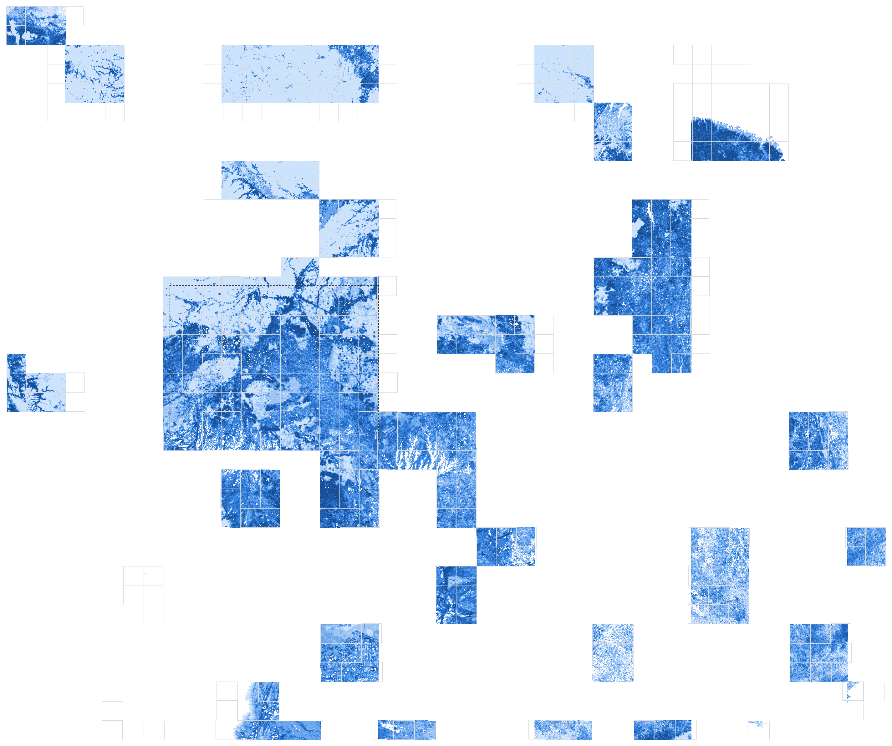

Almanac · issue 2027.01 · forest loss, Amazon and Cerrado
Where will forest be lost in 2026? A forecast made before anyone can know.
For every 640 m cell of forest on 499 exam tiles, the probability that at least 2.5% of it (about 1 hectare) is lost in 2026. The forecast and the rules that grade it were fixed before the 2026 loss maps exist. When they are published, it is graded here, in public, misses included.
The 2026 forecast
The headline forecast, model M (A2): 4,795,484 cells, mean probability 6.4%. Each pixel is the average of the 640 m cells inside it. Blank cells are not forecast: no forest, too little land, or no valid 2025 satellite embedding.

- under 1%
- 1–2%
- 2–5%
- 5–10%
- 10–20%
- 20–40%
- 40% or more
The backtest: graded once, on 2025
Before the forecast was made, the frozen model was scored once on 2025, on the same 499 tiles: 4,814,716 forest cells, 192,761 of them lost. Average precision (AP) rewards putting the cells that were lost at the top of the ranking; a forecast with no skill scores the base rate, 0.040.
| Forecast | AP, all tiles | All | Test tiles | Held-out region |
|---|---|---|---|---|
| Model M (A2), headline | 0.468 | 0.361 | 0.673 | |
| Reference: network without neighbours (B5) | 0.404 | 0.315 | 0.581 | |
| Gradient-boosted trees (B4) | 0.386 | 0.315 | 0.549 | |
| Proximity to past loss (B3) | 0.199 | 0.160 | 0.283 | |
| Last year’s change (B2) | 0.079 | 0.063 | 0.214 | |
| Constant base rate (B0) | 0.040 | 0.035 | 0.051 |
The win condition, applied to the backtest
Fixed and timestamped before any model was trained. All three must hold.
| Condition | Result | Status |
|---|---|---|
| At least 20% above the reference | +16.0% | Not met |
| Lower end of the 95% interval above 10% | +10.7% | Met |
| Better on the test tiles and on the held-out region | +14.4% and +15.7% | Met |
So the backtest is not a win. The model was still chosen as the headline because it was the best forecast on every part of the test; the 20% bar for 2026 was not moved, and the reference and every baseline are locked beside it and graded on the same truth. The decision and the case against it.
What is weak, said plainly
- The probabilities ran high on 2025: more loss was forecast than happened in every tenth of the forecasts.
- On the 2024 validation year the model was 4.6% below the reference. That check was small (146 tiles), but it is part of the record.
- The 2025 test data were read twice: once for the graded backtest and once, against the protocol, for an independent re-grade of the same frozen forecasts. Nothing changed; it is logged below.
- One region, one kind of event, one year ahead.
Check it yourself
The package is plain .npy layers, a tile list and a canonical manifest. Its digest is
the SHA-256 of the manifest:
bc834b2691f0f1c9fdee05a0c0fbae87958efe3a8d3e670aeff113f9b02b7949
The verifier needs only Python and NumPy and imports nothing from the project:
python tools/verify_issue.py PACKAGE_DIR --digest bc834b2691f0f1c9fdee05a0c0fbae87958efe3a8d3e670aeff113f9b02b7949
The backtest was re-graded by separate code that shares nothing with the grader, reading the truth from the source label files: 64 of 64 values matched, the largest difference 4.3e-16.
Every read of the test truth
| When | What |
|---|---|
| 2026-11-15 16:32 UTC | baselines B0-B4, test_2025 and held_out_2025 |
| 2026-11-15 18:12 UTC | baselines B0-B4, test_2025 and held_out_2025 |
| 2026-11-21 15:23 UTC | stage B: model M (A2) ensemble, reference B5 (A2) and B0-B4, test_2025 and held_out_2025 |
| 2026-11-21 15:42 UTC | reproduction of stage B (task 2.8): forest loss, test_2025 and held_out_2025 |
The rules and their proofs
- Pre-registration 2027.01, timestamped 15 November 2026 by FreeTSA and DigiCert and anchored in Bitcoin.
- Amendment 1 (the model) and amendment 2 (the stable recipe and the reference), each timestamped before the runs it governs.
- How to verify the timestamps.
- Every training run, including the ones that collapsed.